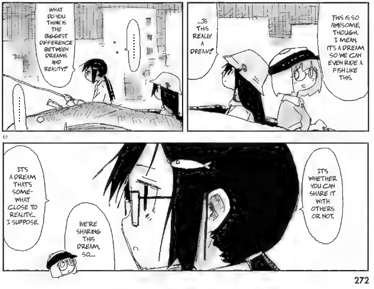

I think ... sometimes
Warning. Contains spoilers for the following:
-Shimeji Simulation

Reading the Shimeji Simulation got me thinking about dreams and reality. This panel specifically stuck in my mind later. What I presumed Shijima's sister meant here is that you can share reality, but not dreams. This got me thinking because I don't feel like this is my case. I don't feel like I can share my reality. I'm a closeted queer, so my life is mainly online, where I express myself as who I am. Online is where I feel like I'm the real me. I can't share that reality with the few people I know in person, and I don't want my irl life going into my online one (at least not much) since it's just boring and I'm not myself. I don't do much with my days except waiting for my duties to be over so that I can get back home and be online. I don't talk other than what is demanded and somewhat rare small chat. I spend a lot of time with my headphones. I feel detached, and that detachment isn't that far off from the detachment I feel when remembering some dreams.
Anyways, today's picture